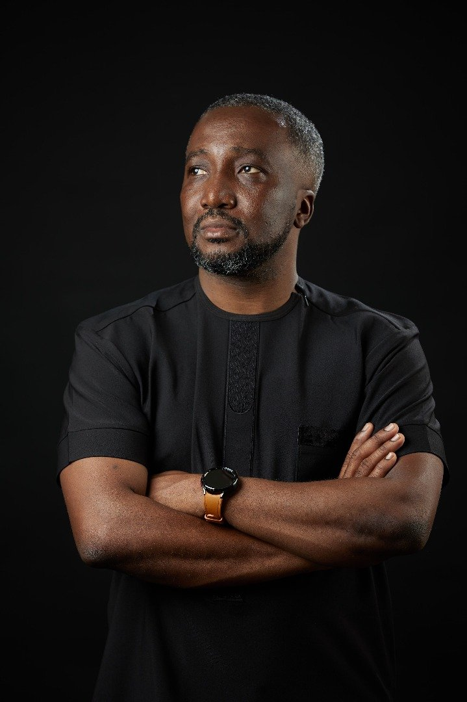

I co-founded one of West Africa's first fintech companies, designed Ghana's National Artificial Intelligence Strategy, and helped build the digital payments architecture behind a market processing an estimated $384.7 billion a year. Harvard Business Review, Der Spiegel, and The Africa Report have named me by name. I now bring that same architecture to boards, governments, and founders.

"In 2008, before Ghana had anything resembling a functional digital payments market, we sold scratch cards. We manufactured that bridge ourselves, because there was no other way through the gap."From my essay, "The $384.7 Billion Architecture"
I work at the intersection of multilateral investment, government mandate, and technology implementation: the layer that determines whether platforms scale, regulations permit, and national digital systems actually function.
Payment systems architecture, interoperability standards, and the regulatory scaffolding that lets fintech platforms scale nationally and across borders: the discipline behind DreamOval, the Ghana–Singapore Financial Trust Corridor, and Ghana's Payment Systems and Services Act.
Design of national digital and AI strategies, cabinet-level policy documentation, and regulatory sandbox frameworks: the discipline behind Ghana's National AI Strategy 2022–2033 and the Ghana Integrated Digital Transformation Blueprint.
Proprietary frameworks that translate research and invention into investable, market-ready ventures: IMVCM, RISCAM, and the Innovation Trust Corridor, a proposed five-country commercialisation concept (Ghana, Kenya, Uganda, Nigeria, South Africa) under UK Government funding, not yet deployed across that corridor.
13 institutions, engaged directly, across four continents. Hover or tab to any name below for the specific engagement.
From founding a fintech company that now processes over a billion dollars a year, to architecting the national policy layer for Ghana's AI adoption. Full case studies on the Track Record page.
Founded from first principles and scaled to process over $1 billion in annual transactions. Built Slydepay, Ghana's pioneering consumer digital payments platform, and CocoaLink, a mobile agricultural advisory platform for 45,000+ cocoa farmers that lifted crop yields by 45.6% and was cited by the US State Department and featured by name in Harvard Business Review.
Co-authored and was designated Principal Architect of the national blueprint now referenced as foundational infrastructure in the World Bank's $200M Ghana Digital Acceleration Project (PAD4612 ↗): the sovereign roadmap for how Ghana's public institutions modernise together rather than in isolation.
How Ghana's Payment Systems Act created a market, not just a set of rules, and what regulatory orientation, not sequence, teaches other developing economies about building digital financial infrastructure that compounds.
Read the essay →A structural argument about Ghana's 24-hour economy programme, and the architectural layer that hour-extension policies consistently miss.
Read the essay →"Harvard Business Review named him by name in its coverage of enterprise IT innovation in Africa, referencing his work on Cocobod's supply chain, the world's second-largest national cocoa trading system."
Fixed-fee sessions, consulting projects, retained advisory, board seats, and government or multilateral programmes. Book a session directly, or submit an RFP, terms of reference, or brief and skip straight to a proposal.